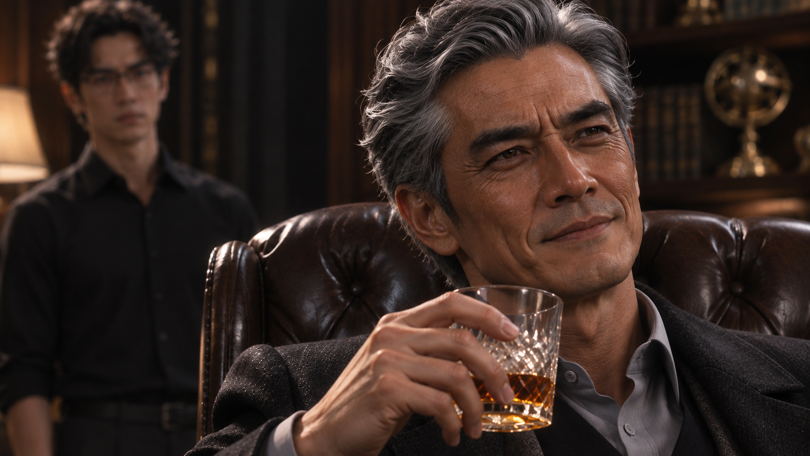
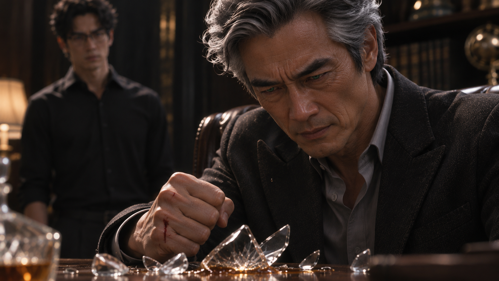
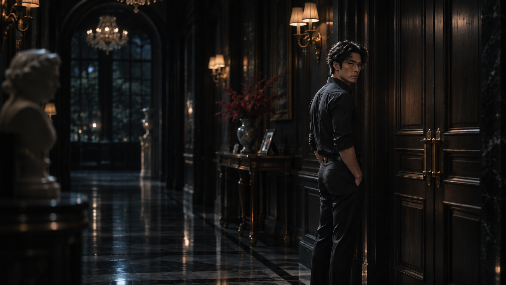
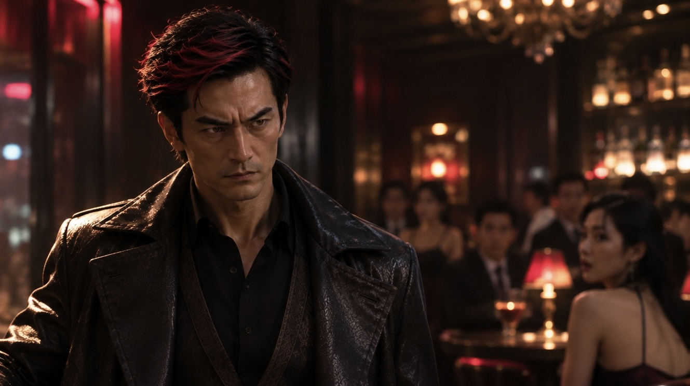
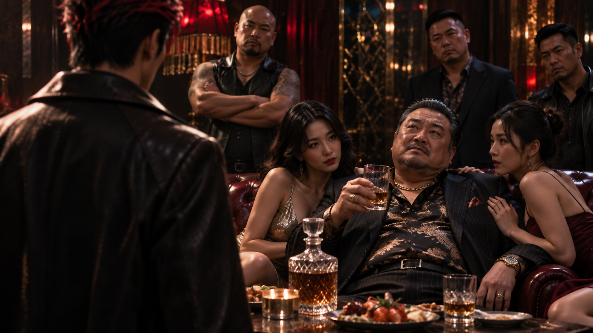
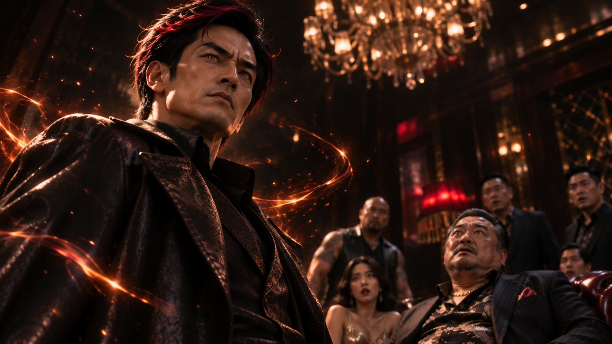
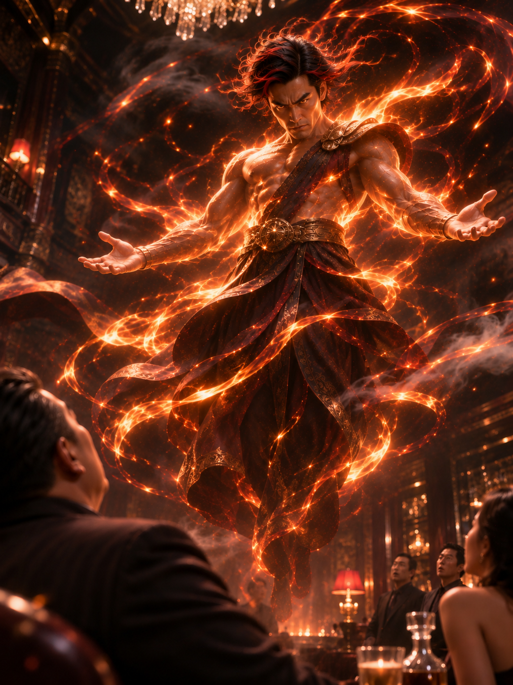
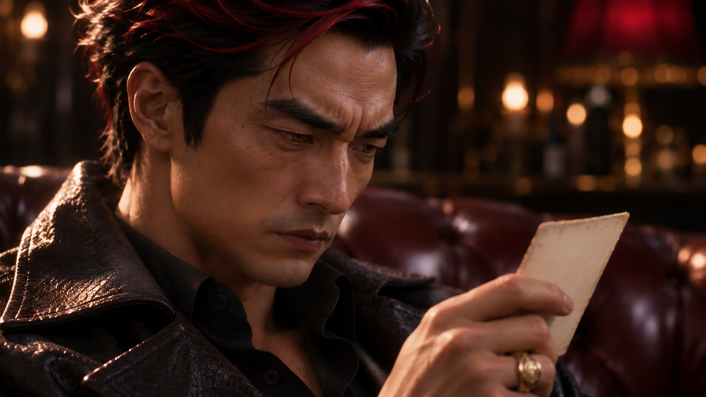

WHITE MAGIC ART STUDIO
第三章
炎君的信徒
時間回到那個夜晚。
梁景皓潛入梁家大宅，帶走兩朵神癒花，為的是拯救命懸一線的梁昱鎧。
那一夜過後，梁家大宅再次恢復平靜。然而，這座曾經熱鬧的宅邸，如今只剩下令人窒息的沉默。
深夜，梁晉輝的辦公室仍亮著燈。
梁景毅站在書桌前，低著頭，向父親回報今晚的行動。
「梁家班已經全數出動，但還是沒能把景皓帶回來。」
晉輝沒有立刻回答。他坐在辦公椅上，將威士忌倒入玻璃杯，隨後抬眼看向兒子。
「你呢？不是早就安排好埋伏了？」
「有遇到他。」
「然後呢？」
景毅沉默片刻。
「他用了水芹花的種子。」
晉輝握著酒杯的手停了一下。
「水芹花？」
「嗯。我中了毒，當時根本動不了。」
晉輝低頭看著杯中的酒，忽然笑了。
「呵……水芹花啊。」
他搖晃酒杯，似乎想起了什麼。

「真沒想到，他連這種東西都還記得。」
景毅沒有接話。
「知道你怕什麼、弱點在哪裡，代表他心裡還記得你這個弟弟。」晉輝靠向椅背，笑意漸漸變得苦澀，「既然連這些都記得，怎麼就不記得回家看看？」
「他有回來。」
景毅的聲音讓晉輝抬起頭。
「但不是來看我們的。」
辦公室再次安靜下來。
「我知道。」晉輝將酒杯放下，「神癒花，對吧？」
「是。」
「拿走幾朵？」
「兩朵。」
晉輝看著他。
「你說什麼？」
「花院裡剩下的兩朵，全被他帶走了。」
晉輝臉上的笑容消失了。
他緩緩轉動酒杯，過了好一會兒，才低聲說道：
「還真是……一點都不客氣。」
景毅站在原地，沒有說話。
「躲過我親手訓練的梁家班，連你的埋伏也能破解，最後還把家裡最珍貴的東西帶走。」
晉輝仰頭喝下杯中的酒。
「不愧是龍兒。」
他放下酒杯，望向書桌對面的兒子。
「武兒，你說，這到底算我教得好，還是教得不好？」
景毅深吸一口氣。
這個問題，他不知道該怎麼回答。
十年來，他看著父親一次次派人尋找大哥，也看著梁家為此付出越來越多代價。
有些話，他早就想說了。
「爸。」
「嗯？」
「已經十年了。」
晉輝沒有回應。
「我知道你一直想把景皓帶回來，但我覺得……我們是不是該接受一件事？」
「什麼事？」
景毅抬起頭。
「梁景皓，已經不是我們梁家的人了。」
啪！
玻璃碎裂的聲音打斷了他。

晉輝眼睛泛起一點綠光，手中的酒杯應聲破碎，酒液灑落桌面。他鬆開手，碎片落在地毯上，掌心的傷痕卻已在木之聖術的作用下迅速癒合。
景毅看著父親，一時沒有出聲。
晉輝閉上眼睛，沉默了幾秒。
「神癒花的事情，我會聯絡雀兒。」
他抽出紙巾，擦去手上的酒液。
「看看韓國那邊的聖術師盟友有沒有其他消息。」
「爸……」
「時間不早了。」
晉輝將紙巾丟進垃圾桶。
「你先回去休息。明天還有董事會要開。」
景毅看了他一眼。
他知道，今晚的談話已經結束。
「……是。」
離開辦公室後，景毅輕輕關上房門。
走廊裡一片寂靜。
他停下腳步，回頭望著那扇緊閉的門。
九年了。
不論自己替梁家做了多少事，只要提到梁景皓，父親就會變成另一個人。
景毅握緊拳頭，最後什麼也沒說，轉身走向走廊深處。

台北郊區｜紅心餐酒館
同一時間，台北某處郊區。
夜色籠罩著街道。
一道橘紅色火光突然出現在偏僻的巷弄中。火焰沿著地面短暫蔓延，又迅速收攏，最後凝聚成一道人影。
男人從火光中走出。
黑色夾克、帶著暗紅色髮絲的黑髮，以及一雙琥珀色的眼睛。
炎君
他抬頭看向街道另一端。
一間名為「紅心餐酒館」的店面仍燈火通明。
招牌下方停著幾輛轎車，門口偶爾傳來喧鬧的笑聲。
炎君望著招牌，神情逐漸冷了下來。
「紅蓮幫……」
他低聲念出這個名字。
腦海中，又浮現出那張泛黃的照片。
照片裡的光頭男人，身上布滿刺青。
還有那些始終拼湊不起來的聲音。
他不知道自己為什麼如此憎恨這個名字。
但他知道，今晚必須來這裡。
炎君推開餐酒館的大門。
音樂聲迎面而來。
店內燈光昏暗，幾桌客人正在喝酒聊天。吧檯旁有人打著電話，角落的沙發區則聚集了一群穿著講究的男人。
炎君的出現，引來不少目光。

幾名女子注意到他，笑著向他打招呼。
「帥哥，一個人啊？」
炎君沒有理會，逕自走向吧檯。
「請問，這裡有個叫蔣國華的人嗎？」
吧檯小姐抬起頭。
「您找蔣先生？」
「對。」
「請問有什麼事嗎？」
還沒等炎君回答，旁邊便傳來一道粗魯的聲音。
「喂，你找我們老大幹嘛？」
一名手臂布滿刺青的男子走了過來。
他上下打量炎君，語氣毫不客氣。
炎君看著他，忽然笑了。
「嗯……討債吧。」
「討債？」
男子愣了一下，隨即沉下臉。
「你知道這裡是誰的地盤嗎？」
炎君沒有回答。
男子正準備上前，角落卻有人開口。
「阿雄。」
聲音不大，卻讓他立刻停住。
「過來。」
沙發上的男人放下酒杯。
他約莫五十多歲，身材發福，襯衫的鈕扣被肚子撐得緊繃。身旁坐著幾名陪酒的女子，桌上擺滿酒瓶與餐點。

他瞇起眼睛，打量站在吧檯前的陌生男人。
「年輕人。」
炎君轉過頭。
「你找我？」
「你就是蔣國華？」
男人點頭。
「沒錯。」
「很好。」
炎君慢慢走近。
蔣國華靠在沙發上，仍試圖維持從容。
「我看你有點眼熟。我們以前見過？」
炎君停在他面前。
「也許吧。」
「那你說說，我欠你什麼？」
炎君微微一笑。
「你的命。」
蔣國華臉上的笑容僵住。
阿雄立刻上前。
「你這傢伙——」
他伸手想攔住炎君，卻在碰到對方的瞬間停住了。
一股異常的熱浪從兩人之間散開。
阿雄驚叫著退後，踉蹌撞上桌角。
酒杯翻倒，玻璃碎裂。
音樂仍在播放，附近的客人卻已察覺不對勁。
炎君低頭看了他一眼。
「我在跟你老大說話。」
他的琥珀色眼瞳逐漸轉為枯葉般的褐色。

下一刻，火光驟然亮起。
阿雄的身影消失在刺眼的烈焰中。
店裡響起尖叫。
有人起身逃跑，有人躲進桌下，吧檯小姐慌忙拿起手機。
炎君沒有追趕。
他只是抬起手。
餐酒館的大門隨即被一層橘紅色火光封住。
衝到門前的人急忙停下，驚恐地退回店內。
「各位。」
炎君環顧四周。
「先別急著走。」
整間餐酒館陷入混亂。
蔣國華跌坐在沙發上，望著眼前的男人。
他的表情，從憤怒逐漸轉為不可置信。
「你……」
炎君走向他。
「想起來了嗎？」
蔣國華的嘴唇顫抖著。
「炎……炎神君？」
炎君停下腳步。
「喔？」
蔣國華連忙站起，卻因雙腿發軟，差點跪倒在地。
「真的是您？」
炎君笑了。
「看來你還記得。」
「怎麼可能……您怎麼會……」
「怎麼會親自來找你？」
炎君替他把話說完。
蔣國華不敢回答。
炎君轉頭看向餐酒館裡的人。
「不過，在談正事之前，我倒想先問問各位。」
他張開雙手，幾縷火光在指尖浮現。
「你們平常，都拜什麼神？」
沒有人回答。
角落裡，一名男子低著頭，不斷小聲祈禱。
「安聖帝君保佑……安聖帝君保佑……」
炎君聽見了。
他轉身走向那名男子。
「安聖帝君？」
男子抬起頭，驚恐地看著他。
炎君俯下身。
「我知道祂是誰。」
他的語氣平靜。
「但你現在祈求祂，也改變不了眼前的事。」
男子不敢再說話。
炎君伸出一根手指，輕輕點向他的額前。
火光一閃。
眾人只看見一道烈焰升起，隨即紛紛別過頭去。
餐酒館再次陷入死寂。
炎君慢慢站直身子。
「還有人想介紹自己的家神嗎？」
沒有人敢出聲。
他環視四周，露出滿意的神情。
「很好。」
下一刻，火焰從他的腳邊升起，沿著身軀盤旋。
黑色外套在火光中逐漸被另一種古老而威嚴的形象取代。
炎君懸浮在半空中，周身環繞著橘紅色的火焰。

「不管你們以前拜過誰……」
他的聲音在餐酒館內迴盪。
「從今晚開始，你們最好記清楚，站在面前的是誰。」
蔣國華再也支撐不住，跪倒在地。
「炎神君大人！」
他連忙低下頭。
「我們紅蓮幫一直都有供奉您！每個月都有派人去上香，從來沒有怠慢過！」
炎君俯視著他。
「我知道。」
蔣國華抬起頭，彷彿抓住一線希望。
「那……那您今天親自過來，是不是有什麼吩咐？」
「終於問到重點了。」
炎君緩緩落回地面。
火焰收斂，他再次恢復黑色外套的模樣。
「聽說你們辦事很有效率。」
「是、是！」
「以前，我應該也幫過你們不少忙吧？」
蔣國華連忙點頭。
「當然！炎神君大人的恩惠，我們紅蓮幫一直銘記在心！」
炎君看著他。
「那現在，換你幫我一個忙。」
「您儘管吩咐！」
「幫我找個人。」
蔣國華一愣。
「找人？」
「有問題？」
「沒有！當然沒有！」蔣國華趕緊搖頭，「只是……您要找誰？」
炎君從口袋裡拿出一張摺起的紙。
那是他目前掌握的少數線索。
「我要找一個大約十歲的男孩。」
蔣國華仔細聽著。
「他的名字我不知道。」
炎君停頓片刻。
「但我知道他父親叫梁景皓。」
「梁景皓……」
蔣國華低聲重複。
「大概三十幾歲，住在北部。」
炎君將紙收回口袋。
「我要你找到他的兒子。」
蔣國華連忙點頭。
「沒問題！只要人在台灣，我一定想辦法找到！」
「很好。」
「不過……」
蔣國華猶豫了一下。
「這可能需要一點時間。」
炎君笑了。
「時間？」
他轉頭看向那些躲在角落的客人。
「我可以給你時間。」
蔣國華剛鬆一口氣，便聽見炎君繼續說道：
「每過四個小時，如果還沒有消息，我就會從這裡挑一個人。」
蔣國華臉色瞬間慘白。
「炎神君大人……」
「直到你找到人為止。」
「大人！求您開恩！」
蔣國華跪伏在地。
炎君低頭看著他，忽然笑出聲。
「奇怪。」
他蹲下身。
「堂堂紅蓮幫老大，平常不是很有氣勢嗎？」
蔣國華不敢抬頭。
「怎麼現在怕成這樣？」
「大人，我一定會找到！真的！」
炎君站起身。
「那就趕快去。」
「是！」
「帶幾個人一起吧。人多，應該比較快。」
蔣國華立刻叫來幾名手下。
眾人匆忙走向大門，卻發現出口仍被火光封住。
蔣國華回頭望向炎君。
「大人……門……」
炎君看了他一眼。
「真麻煩。」
他隨手一揮。
牆邊的火光驟然擴散，伴隨一聲巨響，打開一道通往外面的缺口。
夜風灌入餐酒館。
「出去吧。」
蔣國華連聲道謝，帶著手下匆匆離開。
炎君望著他們消失在夜色中的背影，慢慢收回手。
火焰重新封住缺口。
店內只剩下壓抑的哭聲與凌亂的桌椅。
炎君走向沙發，坐了下來。
他看著那些不敢動彈的客人，隨意指了指桌上的酒瓶。
「酒。」
沒有人動。
炎君抬起眼。
「聽不懂？」
一名服務人員連忙走上前，顫抖著替他倒酒。
炎君接過酒杯，卻沒有喝。
他的目光落在杯中晃動的液面上。
不知為何，他又想起了那張照片。
那個光頭男人。
還有一個女人的聲音。
那些零碎的記憶始終沒有答案。
他明明知道自己恨紅蓮幫，卻想不起這份恨意究竟從何而來。
炎君放下酒杯。
那個男人，到底是誰？
他望向窗外。
我以前……真的有家人嗎？
沒有人能回答。
而在餐酒館的另一端，牆上的時鐘仍一分一秒地走著。
對留在這裡的人而言，每一聲滴答，都像是在提醒他們——
時間正在流逝。
